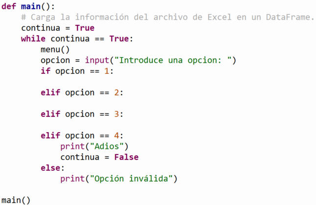

TC 1037. Pensamiento algorítmico
. |
Entrega final "Situación problema"
 Modalidad
Modalidad
Individual
 Objetivo
Objetivo
El objetivo que se persigue en esta Situación Problema,
es que el alumno aplique los conceptos, herramientas de búsqueda y análisis de
datos para resolver una problemática de una empresa planteada por el mismo
estudiante, a través de la programación con Python.
Metodología
Primero que todo debemos seguir una metodología para
este proceso.
- Definición del problema.
Identifica el tema y el enfoque de tu estudio, eligiendo un área que te
interese explorar. El objetivo es desarrollar un programa capaz de procesar
grandes volúmenes de datos rápidamente.
- Recolección de datos.
Busca datasets en formato CSV (preferentemente con columnas cuantitativas y
cualitativas) que te permitan analizar información relevante. Asegúrate de
que los datos sean completos y variados para obtener resultados más ricos.
- Depuración de datos. Estandariza
el formato de los datos (por ejemplo, asegurando uniformidad en fechas y
números), elimina duplicados y filtra las observaciones irrelevantes o
incompletas. Guarda solo los datos que sean útiles y estén bien organizados.
- Análisis. Usa herramientas
estadísticas y gráficas en Python para explorar los datos. La estadística
descriptiva te ayudará a identificar patrones, y herramientas como
Matplotlib te permitirán crear gráficos para ilustrar tus hallazgos.
- Conclusión. Interpreta los
resultados del análisis, identifica patrones o anomalías, y conecta estos
hallazgos con las preguntas originales. Extrae conclusiones claras y
proporciona recomendaciones o ideas para futuras investigaciones basadas en
los datos procesados.
 Instrucciones
generales
Instrucciones
generales
Tomando como base el archivo de Excel definido en la
primera entrega (entrega1.xlsx) y con base a las preguntas que
generaste en la segunda entrega:
- Extraer la información necesaria y
suficiente para dar respuesta a tus preguntas.
- Aplicar estadística descriptiva
mediante herramientas de Python para visibilizar datos que no se perciben a
simple vista.
- Representar las respuestas a tus
preguntas detonadoras a través de gráficas.
- Explicar los resultados mostrados
en tus gráficas y generar una propuesta de acciones que
aporte valor a las decisiones estrategicas del negocio, de acuerdo con la
problemática planteada.
Especificaciones
del programa
Desarrolla las siguientes funciones en el programa
para resolver la situación problema:
- estadistica_descriptiva(tablero): Recibe
como parámetro de entrada el dataframe (tablero). Debe analizar al
menos 5 descriptores estadísticos de la información relacionada con tus
preguntas detonadoras.

- Representación gráfica: Representa la
solución a tus preguntas detonadoras a través de gráficos. ¡Sé creativo!
- grafica1(tablero): Recibe como parámetro de
entrada el dataframe. Debe generar una gráfica simple de barras o
líneas sobre la información de una de tus preguntas detonadoras. Guarda
la información de las columnas requeridas en dos listas (tú eliges el
criterio a mostrar). Como requisito mínimo, la gráfica debe incluir
título y etiquetas en los ejes.
- grafica2(tablero): Recibe como parámetro de
entrada el dataframe. Esta función debe cumplir con una de
las siguientes tres opciones:
- Generar una gráfica con dos subgráficas (dos
cuadrantes en una misma figura) sobre la información de tus
preguntas detonadoras. Requiere guardar los datos en dos listas,
título y etiquetas adecuadas.

- Generar una gráfica con un elemento en el eje
X y dos variables en el eje Y. Requiere guardar los datos en dos
listas, título, leyendas y etiquetas adecuadas.

- Generar una gráfica de barras o líneas
utilizando subtablas mediante el método groupby. Requiere guardar
los datos en dos listas, título y etiquetas adecuadas.


- menu(): Despliega en pantalla el siguiente
menú de opciones:
-
Estadística descriptiva
-
Gráfica 1
-
Gráfica 2
-
Salir
- main():
- Carga la información del archivo de Excel en un
dataframe.
- Utiliza la función menu() para desplegar las
opciones y, según la selección del usuario, ejecuta la función
correspondiente mediante estructuras de control condicionales (if / elif
/ else).
- Toda la captura de datos debe realizarse dentro
del main().
- Emplea un ciclo while para mantener el programa en
ejecución hasta que el usuario elija la opción "Salir".
- Script principal: Llama a la función main()
para iniciar la ejecución del programa.

- Documentación del código: Incluye
comentarios antes de cada función con una breve descripción de su propósito.
Agrega los comentarios necesarios a lo largo del código para facilitar su
comprensión.
- Entrega: Guarda tu archivo con la siguiente
nomenclatura: entregaF_matrícula.py
Especificaciones
de la documentación
-
Portada: Incluir tus datos personales y de la
situación problema utilizando la plantilla adjunta (Portada.docx)
- Descripción del giro de la empresa:
Describir de forma general el giro del negocio.
-
Descripción de los campos: Explicar detalladamente el
significado de los campos incluidos en la tabla o dataframe.
- Preguntas detonadoras: Responder a
las preguntas planteadas en el situación problema.
- Capturas de pantalla del programa:
Incluir las impresiones de pantalla de los resultados de la función
estadistica_descriptiva.
-
Resultados
estadísticos: Incluir las impresiones de pantalla de los resultados
generados por la función
estadistica_descriptiva.
-
Visualizaciones: Incluir las capturas de pantalla de las gráficas
generadas (
grafica1
y grafica2).
- Conclusión:
- Análisis de resultados:
Analizar y explicar los hallazgos obtenidos a través de la estadística
descriptiva y las gráficas.
- Propuesta estratégica: Generar
una propuesta de acciones que aporten valor a la toma de decisiones del
negocio, alineada con la problemática planteada y fundamentada en los
datos procesados.
- Entrega: Guarda tu archivo en formato Word
con la siguiente nomenclatura:
entregaF_matrícula.docx
 Rúbrica
del programa
Rúbrica
del programa
-
(.5 puntos) Portada: Incluir tus
datos personales y de la situación problema.
-
(.5 puntos) Portada: Incluir tus
datos personales y de la situación problema.
-
(.5 puntos) Portada: Incluir tus
datos personales y de la situación problema.
-
(.5 puntos) Portada: Incluir tus
datos personales y de la situación problema.
- (10 puntos) Menú principal: El
programa presenta el menú cada vez que el usuario lo requiera mediante un
ciclo while.
- (5 puntos) Lectura de datos:
Lectura del archivo de Excel.
- (15 puntos) Estadística descriptiva:
Análisis de las columnas del archivo. Calcular e interpretar al
menos 4 descriptores estadísticos.
- (10 puntos) Funciones: Implementación de código modular que contenga al menos 3 funciones.
- (10 puntos) Estructura de control:
Uso de condicionales con al menos 3 condiciones.
- (20 puntos) Visualización de datos:
Generación de
una gráfica por cada pregunta detonadora. Los gráficos deben incluir todos
sus elementos (títulos, etiquetas, leyendas y nombres de ejes).
- (5 puntos) Documentación del programa: El
código debe incluir los comentarios necesarios para facilitar su lectura y
comprensión.
- (10 puntos) Conclusión escrita:
Interpretación de los resultados del análisis, extracción de
conclusiones claras y propuesta de recomendaciones fundamentadas en los
datos procesados.
Rúbrica
del programa
(0.5 puntos) Función
menu()
(2 puntos)
Función main()
(0.5 puntos) Lectura del archivo de Excel
(creación del DataFrame)
(4 puntos)
Función estadística_descriptiva()
(.5 puntos)
Captura de pantalla: gráfica1
(20 puntos)
Definición de funciones
(2 puntos)
Uso de estructuras de control condicionales (if)
(2 puntos)
Uso de ciclos
(15 puntos)
Función grafica1() (gráfica simple de barras o líneas)
(20 puntos)
Función grafica2() (gráfica con 2
cuadrantes / 2 ejes Y / groupby)
(0.5 puntos)
Documentación del código (comentarios por función)
---------------
(66.5 puntos)
Rúbrica
de la documentación
(0.5 puntos)
Portada
(0.5 puntos)
Giro de la empresa
(2 puntos)
Descripción de los campos del
DataFrame
(0.5 puntos)
Preguntas detonadoras
(0.5 puntos)
Captura de pantalla: gráfica1
(0.5 puntos)
Captura de pantalla: gráfica2
(0.5 puntos)
Captura de pantalla: estadística_descriptiva
(10 puntos)
Explicación de resultados: Gráficas (Respuestas a preguntas detonadoras)
(1 punto)
Explicación de resultados: Estadística descriptiva
(10 puntos)
Conclusiones
(1 punto)
Video explicativo
---------------
(32.5 puntos)
Especificaciones de entrega
-
Formato de entrega:
.py, .py, .xlsx, .docx, .pdf, .mp4 (o enlace a
video)
-
Medio de entrega:
Subir los archivos en Canvas en la sección:
SITUACIÓN PROBLEMA:
Entrega final
-
Documentación del proyecto:
entregaF_matrícula.pdf (o .docx):
Archivo en Word o PDF con la documentación completa.
- Código de Python:
entregaF_matricula.py: Script
principal con el código desarrollado.
-
Base de datos:
base_de_datos.xlsx:
Archivo de Excel con los datos utilizados.
-
Video individual: video_matricula:
Video explicativo con una duración máxima de 3 minutos.
-
Requisitos visuales: En la pantalla se debe
observar claramente tu rostro y el código que estás explicando.
-
Contenido a exponer: Explicación del
funcionamiento del código, los retos enfrentados durante el desarrollo,
los problemas presentados y cómo se solucionaron.
© Departamento de Computación
. |